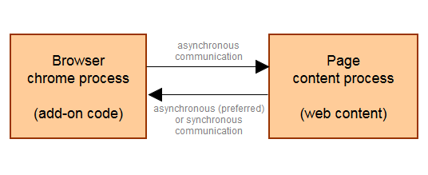
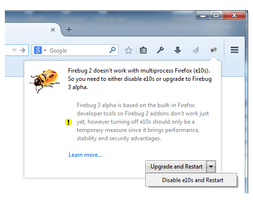

Firebug 3 封閉測試 (Alpha) 已於數週之前開跑。此版本代表新一代 Firebug 是完全以 Firefox 原生開發者工具所建構而成。
說到 Firebug 以 Firefox 原生開發者工具架構的優點，其中之一就是可緊密整合現成平台，進而輕鬆使用既有的平台元件。對 Firefox 即將支援的多程序 (Multiprocess) 亦格外重要；此即我們所謂的「Electrolysis」或「E10S」專案。
摘錄於 Mozilla 的 Wiki 頁面：
The goal of the Electrolysis project (“e10s” for short) is to run web content in a separate process from Firefox itself. The two major advantages of this model are security and performance.
「Electrolysis」專案 (簡稱為「e10s」) 的目標，就是要在 Firefox 之外，以獨立的程序執行 Web 內容。而此模式的兩大優點就是安全與效能。
E10S 將引領安全與效能大幅躍進，並進一步強調附加元件 (Add-on) 的內部架構。而對許多擴充套件 (Extension) 而言，其主要挑戰即是要能解決程序之間的溝通問題。簡單來說，附加元件的程式碼執行於瀏覽器的主程序上 (chrome process)；有別於個別網頁內容的程序，如下圖所示。只要擴充套件要存取網頁，就必須搭配目前可用的程序間通訊 (Inter-process communication，IPC) 通道，如訊息管理員 (Message manager) 或遠端除錯協定 (Remote debugging protocol)。附加元件的程式往後將無法直接存取網頁的內容。這也代表許多現有的同步 API 將轉為非同步 API。
包含 Firebug 在內的開發者工具，均有多種可處理網頁內容的方式。這些工具往往蒐集了大量除錯頁面的資料 (也有 metadata)，並將之呈現給使用者。不同的 CSS 與 DOM 檢測器 (Inspector) 不僅會顯示內部的內容資料，也能讓使用者進一步編輯並即時呈現相關變化。這些功能均須仰賴工具與網頁內容之間密集的溝通互動。

既然 Firebug 是以現成的開發者工具為其架構，當然也保留了本身與除錯頁面之間的基本互動功能，讓我們得以更專注於新功能與使用者經驗。
Firebug 相容性
Firebug 2.0 現可相容於 Firefox 30 ~ 36 版本，並將支援後續「非多程序」的瀏覽器 (以及最近針對開發者所發表的瀏覽器)。
Firebug 3.0 封閉測試版 (也就是 Firebug.next) 現可相容於 Firefox 35 ~ 36 版本，並將支援後續的多程序 (非多程序亦包含在內) 瀏覽器。
自 Firebug 2 升級
如果你將 Firebug 2 安裝到可支援多程序 (e10s) 的瀏覽器中，就會看到系統建議升級到 Firebug 3，或請你關閉多程序支援功能。

當然我們建議你升級到 Firebug 3。因為 Firebug 3 現仍屬封閉測試階段，雖然你可能無法使用 Firebug 2 中的某些功能 (如 Firebug 的擴充套件)，但你能提供意見給我們，即時讓我們知道你最想要的功能。
你也能透過 Twitter 隨時獲得最新資訊。
另可透過 Firebug 的消息群組或下方留言板寫下你的意見。
─ Jan ‘Honza’ Odvarko